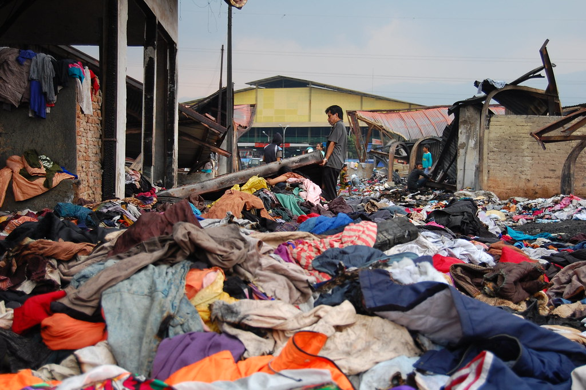
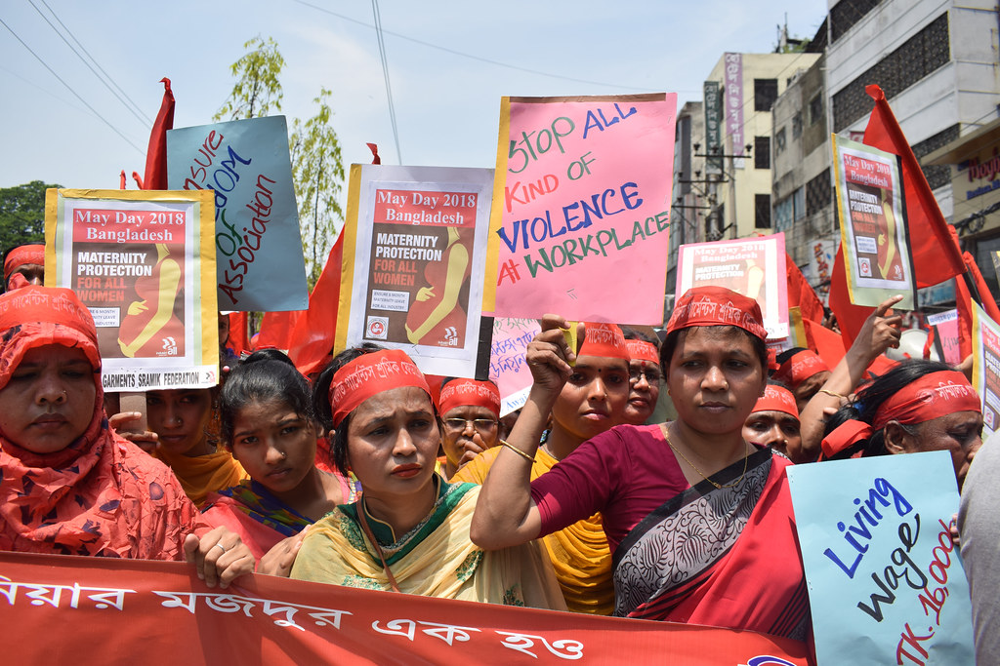
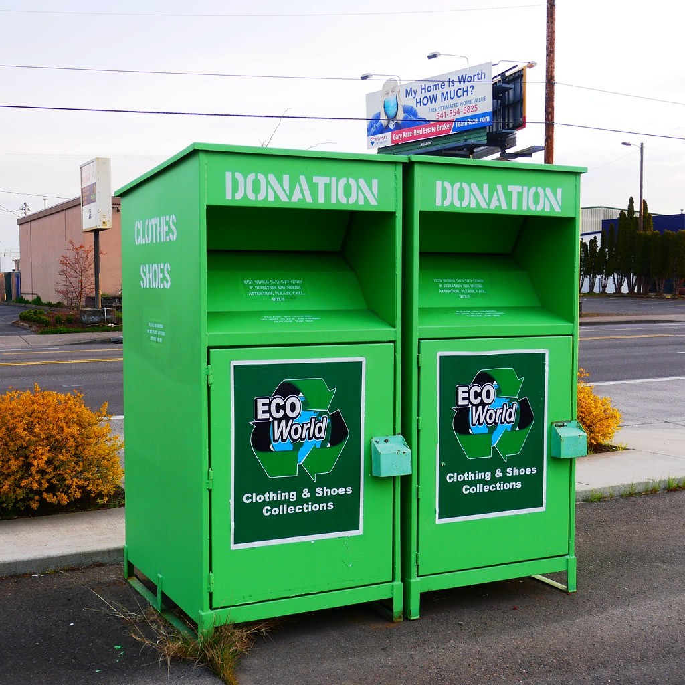
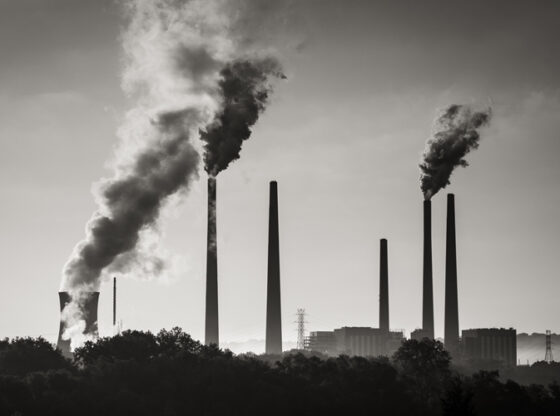

Educational Resources
Learn about the environmental and social impacts of fast fashion, and discover ways to advocate for sustainable practices.
Explore Topics
The fashion industry industry is responsible for approximately 10% of annual global carbon emissions, surpassing the combined emissions of all international flights and maritime shipping. Additionally, textile production accounts for about 20% of global clean water pollution, primarily from dyeing and finishing processes. Synthetic fibers, such as polyester, contribute significantly to microplastic pollution, with a single laundry load releasing up to 700,000 microplastic fibers into the environment.

Additionally, the industry produces approximately 92 million tons of textile waste and contributes more carbon emissions than international flights and maritime shipping combined. The production of a single cotton shirt can require up to 2,700 liters of water—enough for one person to drink for two and a half years. Fast fashion encourages overproduction and overconsumption, leading to overflowing landfills and increased greenhouse gas emissions.

Globally, the garment industry employs around 75 million workers, yet less than 2% earn a living wage. Many laborers endure unsafe working conditions, excessive hours, and exposure to harmful substances. For instance, sandblasting denim—a common practice—can lead to severe respiratory issues due to inhalation of fine silica particles. Tragic events, such as the Rana Plaza collapse in 2013, which claimed over 1,100 lives, underscore the dire need for improved labor standards and factory safety.
Many garment workers face unsafe conditions and poverty wages. Brands often outsource to factories with little oversight to cut costs.
A circular economy in fashion emphasizes designing out waste and keeping materials in use. This includes practices like clothing rental, resale, repair, and recycling. Brands such as ThredUP, Rent the Runway, and Mud Jeans are pioneering these models, promoting sustainability and reducing reliance on virgin resources. Community initiatives, like ReThread DC, offer workshops on mending and upcycling, empowering individuals to extend the life of their garments and reduce textile waste.

Solutions include thrifting, upcycling, and repair programs. Advocating for circular systems means reducing waste and keeping garments in use longer.

Greenwashing occurs when companies mislead consumers about the environmental benefits of their products or practices. For example, H&M’s “Conscious Collection” has been criticized for lacking transparency and making vague sustainability claims. Similarly, Shein faced scrutiny from Italian authorities over potentially deceptive environmental assertions on its website. To avoid falling for greenwashing, consumers should look for third-party certifications, detailed sustainability reports, and measurable environmental goals from brands.
Brands often use vague claims like "eco-friendly" without real evidence. Learn to read sustainability reports and recognize genuine efforts versus marketing tactics.